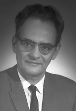

Please note: the AAS Obituaries are temporarily being hosted on this website while their full content is being ingested into the PubPub publishing platform newly adopted by the Bulletin of the American Astronomical Society. When the migration is complete, your existing links will take you to the final, migrated content. Contact peter.williams@aas.org with any questions.
Arthur Edward Covington (1913-2001)
Arthur Edwin Covington, Canada's first radio astronomer and founder of the daily 10.7-cm solar flux patrol, died peacefully in his home in Kingston, Ontario after a lengthy illness on 17 March 2001. He was eighty-eight years old. His wife Charlotte and their four children, Nancy, Eric, Alan, and Janet survive him.
Covington was born in Regina and educated in Vancouver. Deeply absorbed with radio science and astronomy from his youth, Covington graduated in mathematics and physics from the University of British Columbia (UBC) in 1938. He stayed at UBC to complete a Master's thesis on lens design for electron microscopes. But in 1940 he moved to the University of California, Berkeley, to begin graduate studies in nuclear physics. He met and married fellow physics student Charlotte Anne Riche in Berkeley. In 1942, the Covingtons moved to Ottawa to join Canada's wartime research effort in radar at the Radio Branch of the National Research Council's Laboratories (NRCL).
Well aware of Jansky's and Reber's discoveries of “cosmic radio noise” at metric wavelengths, at the end of the war Covington proposed to use converted radar equipment operating at a wavelength of 10.7 cm to probe the galactic center using the Sun's decimetric emission as a calibrator for deriving the cosmic-noise spectrum. His first attempts to measure the integrated flux over the solar disk in July 1946 did not produce consistent flux levels from day to day. The sun was quite active with large sunspots, so Covington was uncertain whether his instruments, local interference, or the Sun caused the daily variations, and he struggled to interpret these inconsistencies. Charlotte Covington, his wife, pointed out that a forthcoming partial solar eclipse would be visible from Ottawa on 23 November 1946. Covington seized this chance to measure the solar flux variations as the Moon occulted a large sunspot. In that single observation, he provided the first decisive proof that dark sunspots are associated with discrete hot sources of decimetric radiation. Over the next year of uninterrupted daily measurements of the integrated flux, Covington established that the variability of the 10.7-cm flux closely matched that of the sunspot numbers. Both measures were modulated by the comings and goings of active regions and the solar rotation.
Covington's groundbreaking studies of what came to be called the slowly varying component of solar radio emission quickly took advantage of other wartime developments at NRCL. A unique combination of a 46 m-long slotted wave-guide and two parabolic cylinders, erected in 1951 south of Ottawa, was the first device built in Canada to detect radio emissions from discrete astronomical sources. It was one of the earliest compound microwave interferometers; its narrow fan beam enabled Covington and N. W. Broten to measure solar limb brightening and the temperatures above isolated sunspots. With W. J. Medd, Covington began a series of experiments in the early 1950's to improve the relative and absolute accuracies of the daily observations of integrated Solar radio flux. In the process, they laid the foundation for future confidence in the daily 10.7-cm flux as an objective index of solar activity.
Over the next decade, these early successes paved the way for the NRC to establish the Algonquin Radio Observatory for galactic and solar astronomy at a remote radio-quiet site beside Lake Traverse, Ontario. Covington chose to continue with solar research for the rest of his career. He had, from the beginning, grasped the practical importance of solar-terrestrial research using the 10.7-cm flux as a proxy for ionizing solar radiation. The ever-growing list of applications for the daily 10.7-cm flux is a tribute to Covington’s persistence in raising the quality of the measurements to the highest standards. The monitoring program was extended long past his retirement in 1978. The program, now in its 54th year, continues at the Dominion Radio Astrophysical Observatory near Penticton.
Covington's colleagues at NRCL honored him, shortly after he retired, by erecting a unique sundial at a site overlooking the building where he pursued his solar researches for over 25 years. It is an 0.9-m parabaloidal reflector supported on a framework of 10-cm wave-guide, with a 10-cm dipole feed at the focus as a gnomon.
Covington never forgot that his youthful passion for astronomy was nurtured among amateur enthusiasts in the Royal Astronomical Society of Canada. He contributed generously and with evident pleasure in many ways throughout his career to the Ottawa Centre.
Beneath Covington’s reserved, orderly exterior there laid a quirky sense of humor and a generous spirit. He was fascinated by arcane topics as well, such as religious mysticism, especially if they had a solar connection. He was an avid collector of books—new and old—that reflected his wide-ranging interests, particularly in the history of radio science and the interrelationship of astronomy with other disciplines. He and Charlotte set up the Riche-Covington Trust at Queen's University, Kingston, to house his collection on the development of radio science in Canada. He leaves these tangible legacies, but his many friends will fondly remember him as much for his devotion to his family and to solar science.
Obituary written by: Victor Gaizauskas (Herzberg Institute of Astrophysics)
BAAS Citation: BAAS, 2002, 34, 1357
SAO/NASA ADS Bibcode: 2002BAAS...34.1357G